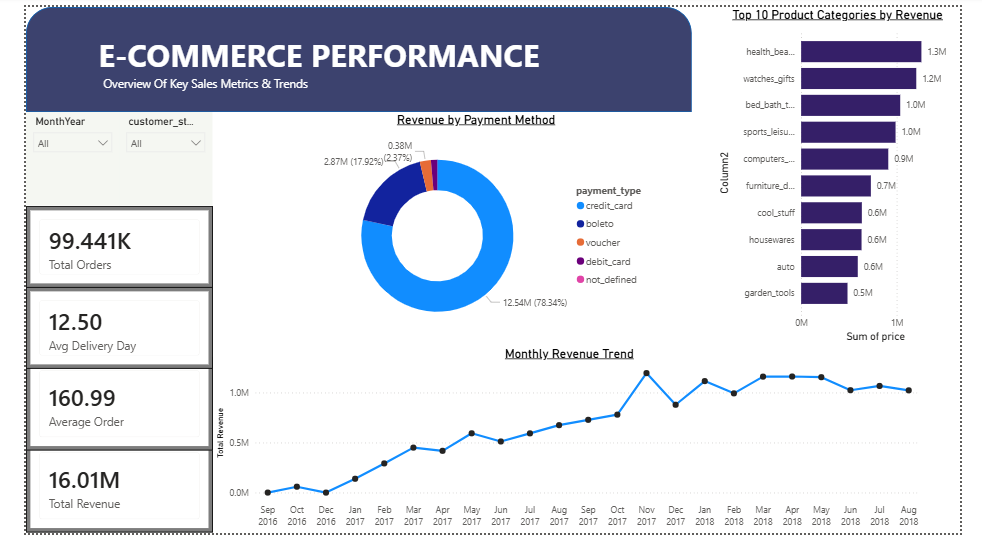
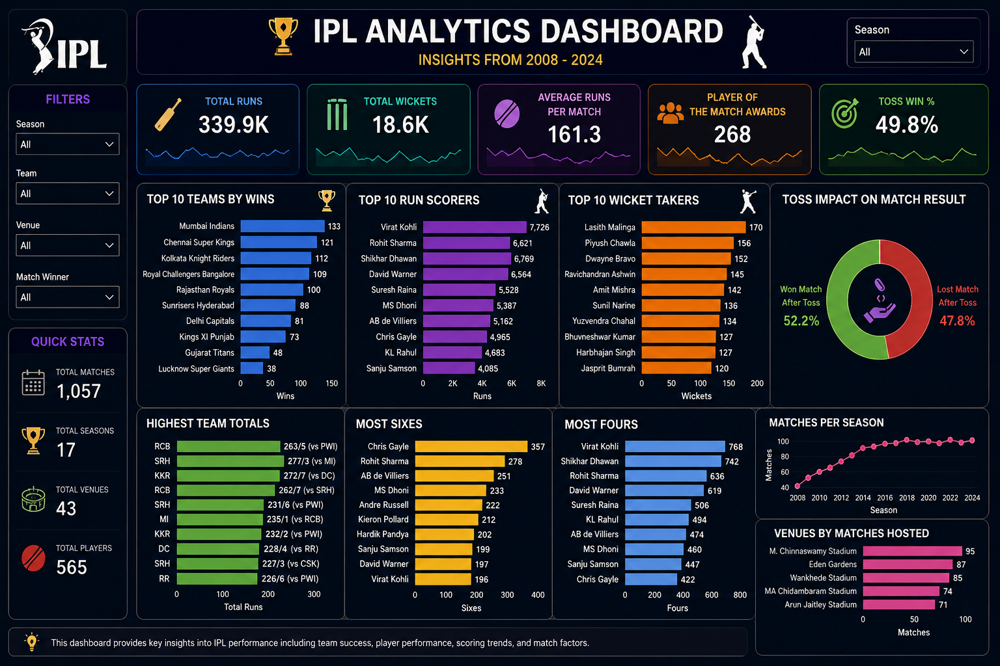
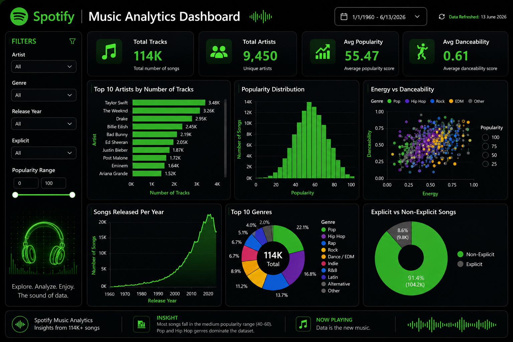

Profile
I am a B.Com student from Jaipur, Rajasthan, building a strong foundation in data analytics, business intelligence, dashboard development, and analytical thinking.
Data Analyst Portfolio
I build business-focused analytics projects using SQL, Power BI, Python, Excel, dashboards, KPI reporting, and data storytelling.
About Me
I am a B.Com student from Jaipur, Rajasthan, building a strong foundation in data analytics, business intelligence, dashboard development, and analytical thinking.
I analyze datasets, define KPIs, clean and transform data, build dashboards, identify trends, and convert insights into practical business recommendations.
Skills
Featured Dashboards
Actual dashboard previews from portfolio projects.

SQL + Power BI
Analyzed 100K+ orders, 16M+ revenue records, payment methods, monthly sales trends, and top product categories.
View GitHub →
Power BI + Sports Analytics
Analyzed IPL performance from 2008–2024, including teams, runs, wickets, toss impact, venues, and player metrics.
View GitHub →
Power BI + Music Analytics
Explored 114K+ tracks, 9,450 artists, genre distribution, popularity, energy, danceability, and release trends.
View GitHub →More Projects
Python + Pandas
Analyzed categories, revenue contribution, review scores, delivery performance, and customer behavior.
View GitHub →Python + ML + Streamlit
Built a predictive model and Streamlit app to classify patient risk as Low, Medium, or High.
View GitHub →SQL + Power BI
Studied funnel stages, conversion gaps, drop-off points, and customer journey performance.
View GitHub →Business Thinking
Identified sales trends, top categories, average order value, and revenue drivers.
Studied customer behavior, retention signals, product performance, and review patterns.
Analyzed conversion stages and drop-off points to locate business improvement areas.
Used machine learning concepts to classify risk and support faster decision-making.
Certifications
Microsoft • Coursera • Jun 2026
View Certificate →Google • Coursera • Jun 2026
View Certificate →Deloitte • Forage • Jun 2026
View Certificate →Tutedude • May 2026
View Certificate →Resume
Aspiring Data Analyst | SQL | Power BI | Python | Excel